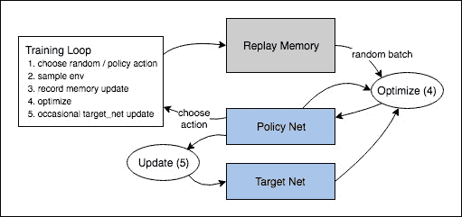

强化学习
译者：Noahs212
项目地址：https://pytorch.apachecn.org/2.0/tutorials/intermediate/reinforcement_q_learning
原始地址：https://pytorch.org/tutorials/intermediate/reinforcement_q_learning.html
作者： -Adam Paszke -Mark Towers
这个教程展示了如何使用 PyTorch在 Gymnasium 的CartPole-v1 任务上训练深度 Q 学习(DQN)代理。
任务
代理人必须在两种操作之间进行选择：向左或向右移动小车，以使其附着的杆保持垂直。您可以在Gymnasium的网站上找到有关该环境和其他更具挑战性的环境的更多信息。

随着代理人观察环境的当前状态并选择一个动作，环境将转变为新的状态，并返回一个奖励，表明该动作的后果。在此任务中，每增加一个时间步奖励就是+1，如果杆倒下太远或小车离中心超过2.4个单位，则环境会终止。这意味着表现更好的情景将持续更长的时间，累积更大的回报。
CartPole任务的设计是，代理人的输入是4个表示环境状态的实数(位置、速度等)。我们不进行任何缩放地获取这4个输入，并将它们通过一个具有2个输出的小型全连接网络，每个动作一个输出。该网络经过训练以预测给定输入状态下每个动作的期望值。然后选择期望值最高的动作。
库
首先，让我们导入所需的库。首先，我们需要gymnasium用于环境，通过使用pip进行安装。这是原始OpenAI Gym项目的一个分支，并且自Gym v0.19以来由同一团队维护。如果你在Google Colab中运行此代码，运行：
我们也需要 PyTorch 的如下功能:
-
神经网络 (
torch.nn) -
优化 (
torch.optim) -
自动微分 (
torch.autograd)
import gymnasium as gym
import math
import random
import matplotlib
import matplotlib.pyplot as plt
from collections import namedtuple, deque
from itertools import count
import torch
import torch.nn as nn
import torch.optim as optim
import torch.nn.functional as F
env = gym.make("CartPole-v1")
#建立matplotlib
is_ipython = 'inline' in matplotlib.get_backend()
if is_ipython:
from IPython import display
plt.ion()
# 如果用GPU的话
device = torch.device("cuda" if torch.cuda.is_available() else "cpu")
回放内存
我们将使用经验回放内存来训练DQN。它存储智能点观察到的转换，允许我们稍后重用此数据。通过从中随机抽样，组成批对象的转换将被取消相关性。结果表明，这大大稳定和改进了DQN训练过程。
因此，我们需要两个类别：
-
Transition- 一个命名的元组，表示我们环境中的单个转换。它基本上将(状态、动作)对映射到它们的(下一个状态、奖励)结果，状态是屏幕差分图像，如后面所述。 -
ReplayMemory-一个有界大小的循环缓冲区，用于保存最近观察到的转换。它还实现了一个.sample()方法，用于选择一批随机转换进行训练。
Transition = namedtuple('Transition',
('state', 'action', 'next_state', 'reward'))
class ReplayMemory(object):
def __init__(self, capacity):
self.memory = deque([], maxlen=capacity)
def push(self, *args):
"""保存转换"""
self.memory.append(Transition(*args))
def sample(self, batch_size):
return random.sample(self.memory, batch_size)
def __len__(self):
return len(self.memory)
DQN 算法
我们的环境是确定的，所以这里提出的所有方程也都是确定性的，为了简单起见。在强化学习文献中，它们还包含对环境中随机转换的期望。
我们的目标是制定一项策略，试图最大化折扣、累积奖励 \(R_{t_0} = \sum_{t=t_0}^{\infty} \gamma^{t - t_0} r_t\)，其中 \(R_{t_0}\) 也被认为是返回值。\(\gamma\) 应该是介于 \(0\) 和 \(1\) 之间的常量，以确保和收敛。它使来自不确定的遥远未来的回报对我们的代理来说比它在不久的将来相当有信心的回报更不重要。
Q-Learning背后的主要思想是，如果我们有一个函数 \(Q^*: State \times Action \rightarrow \mathbb{R}\), 则如果我们在特定的状态下采取行动，那么我们可以很容易地构建一个最大化回报的策略：
\(\pi^*(s) = \arg\!\max_a \ Q^*(s, a)\)
然而，我们并不了解世界的一切，因此我们无法访问 \(Q^*\)。但是，由于神经网络是通用的函数逼近器，我们可以简单地创建一个并训练它类似于 \(Q^*\)。
对于我们的训练更新规则，我们将假设某些策略的每个 \(Q\) 函数都遵循Bellman方程： \(Q^{\pi}(s, a) = r + \gamma Q^{\pi}(s', \pi(s'))\)
等式两边的差异被称为时间差误差，即 \(\delta\):
\(\delta = Q(s, a) - (r + \gamma \max_a Q(s', a))\)
为了尽量减少这个错误，我们将使用 Huber loss。Huber损失在误差很小的情况下表现为均方误差，但在误差较大的情况下表现为平均绝对误差——这使得当对 \(Q\) 的估计噪音很大时，对异常值的鲁棒性更强。我们通过从重放内存中取样的一批转换来计算 \(B\)：
\(\mathcal{L} = \frac{1}{|B|}\sum_{(s, a, s', r) \ \in \ B} \mathcal{L}(\delta)\)
\( \begin{split} \text{where} \quad \mathcal{L}(\delta) = \begin{cases} \frac{1}{2}{\delta^2} & \text{for } |\delta| \le 1, \ |\delta| - \frac{1}{2} & \text{otherwise.} \end{cases} \end{split} \)
Q-网络
我们的模型是一个卷积神经网络，它可以处理当前和以前的帧之间的差异。它有两个输出，分别表示\(Q(s, \mathrm{left})\) 和 \(Q(s, \mathrm{right})\)(其中 \(s\)是网络的输入)。实际上，网络正试图预测在给定电流输入的情况下采取每项行动的预期回报。
class DQN(nn.Module):
def __init__(self, n_observations, n_actions):
super(DQN, self).__init__()
self.layer1 = nn.Linear(n_observations, 128)
self.layer2 = nn.Linear(128, 128)
self.layer3 = nn.Linear(128, n_actions)
# 使用一个元素调用以确定下一个动作，或者在优化期间使用一批
# 返回 tensor([[left0exp,right0exp]...])。
def forward(self, x):
x = F.relu(self.layer1(x))
x = F.relu(self.layer2(x))
return self.layer3(x)
训练
超参数和配置
此单元实例化模型及其优化器，并定义一些实用程序：
select_action- 将根据迭代次数贪婪策略选择一个行动。简单地说，我们有时会使用我们的模型来选择动作，有时我们只会对其中一个进行统一的采样。选择随机动作的概率将从EPS_START开始并以指数形式向EPS_END衰减。EPS_DECAY控制衰减速率。plot_durations- 一个帮助绘制迭代次数持续时间，以及过去100迭代次数的平均值(官方评估中使用的度量)。迭代次数将在包含主训练循环的单元下方，并在每迭代之后更新。
# BATCH_SIZE 是从重播缓冲区采样的转换数量
# GAMMA 是前一节中提到的折扣因子
# EPS_START 是 epsilon 的起始值
# EPS_END 是 epsilon 的最终值
# EPS_DECAY 控制 epsilon 指数衰减的速率，数值越高意味着衰减越慢
# TAU 是目标网络的更新速率
# LR 是 ``AdamW`` 优化器的学习率
BATCH_SIZE = 128
GAMMA = 0.99
EPS_START = 0.9
EPS_END = 0.05
EPS_DECAY = 1000
TAU = 0.005
LR = 1e-4
# 从 gym 动作空间获取动作数量
n_actions = env.action_space.n
# 获取状态观察的数量
state, info = env.reset()
n_observations = len(state)
policy_net = DQN(n_observations, n_actions).to(device)
target_net = DQN(n_observations, n_actions).to(device)
target_net.load_state_dict(policy_net.state_dict())
optimizer = optim.AdamW(policy_net.parameters(), lr=LR, amsgrad=True)
memory = ReplayMemory(10000)
steps_done = 0
def select_action(state):
global steps_done
sample = random.random()
eps_threshold = EPS_END + (EPS_START - EPS_END) * \
math.exp(-1. * steps_done / EPS_DECAY)
steps_done += 1
if sample > eps_threshold:
with torch.no_grad():
# t.max(1)将为每行的列返回最大值。max result的第二列是找到max元素的索引，因此我们选择预期回报较大的操作。
return policy_net(state).max(1)[1].view(1, 1)
else:
return torch.tensor([[env.action_space.sample()]], device=device, dtype=torch.long)
episode_durations = []
def plot_durations(show_result=False):
plt.figure(1)
durations_t = torch.tensor(episode_durations, dtype=torch.float)
if show_result:
plt.title('Result')
else:
plt.clf()
plt.title('Training...')
plt.xlabel('Episode')
plt.ylabel('Duration')
plt.plot(durations_t.numpy())
# 平均 100 次迭代画一次
if len(durations_t) >= 100:
means = durations_t.unfold(0, 100, 1).mean(1).view(-1)
means = torch.cat((torch.zeros(99), means))
plt.plot(means.numpy())
plt.pause(0.001) # 暂定一会等待屏幕更新
if is_ipython:
if not show_result:
display.display(plt.gcf())
display.clear_output(wait=True)
else:
display.display(plt.gcf())
训练循环
最后，训练我们模型的代码。
最后，训练我们模型的代码。
在这里，您可以找到一个optimize_model函数，它执行优化的一个步骤。它首先对一批数据进行采样，将所有tensor连接成一个tensor，计算出\(Q(s_t, a_t)\) 和 \(V(s_{t+1}) = \max_a Q(s_{t+1}, a)\)，并将它们组合成我们的损失。根据定义，如果 \(s\)是结束状态，我们设置 \(V(s) = 0\)。我们还使用目标网络来计算\(V(s_{t+1})\)以增加稳定性。目标网络的权重大部分时间保持不变，但每隔一段时间就会更新一次策略网络的权重。这通常是一组步骤，但为了简单起见，我们将使用迭代次数。
def optimize_model():
if len(memory) < BATCH_SIZE:
return
transitions = memory.sample(BATCH_SIZE)
# 转置批样本(有关详细说明，请参阅https://stackoverflow.com/a/19343/3343043)。这会将转换的批处理数组转换为批处理数组的转换。
batch = Transition(*zip(*transitions))
# 计算非最终状态的掩码并连接批处理元素(最终状态将是模拟结束后的状态)
non_final_mask = torch.tensor(tuple(map(lambda s: s is not None,
batch.next_state)), device=device, dtype=torch.bool)
non_final_next_states = torch.cat([s for s in batch.next_state
if s is not None])
state_batch = torch.cat(batch.state)
action_batch = torch.cat(batch.action)
reward_batch = torch.cat(batch.reward)
# 计算Q(s_t, a)-模型计算 Q(s_t)，然后选择所采取行动的列。这些是根据策略网络对每个批处理状态所采取的操作。
state_action_values = policy_net(state_batch).gather(1, action_batch)
# 计算下一个状态的V(s_{t+1})。非最终状态下一个状态的预期操作值是基于“旧”目标网络计算的；选择max(1)[0]的最佳奖励。这是基于掩码合并的，这样当状态为最终状态时，我们将获得预期状态值或0。
next_state_values = torch.zeros(BATCH_SIZE, device=device)
with torch.no_grad():
next_state_values[non_final_mask] = target_net(non_final_next_states).max(1)[0]
# 计算期望 Q 值
expected_state_action_values = (next_state_values * GAMMA) + reward_batch
# 计算 Huber 损失
criterion = nn.SmoothL1Loss()
loss = criterion(state_action_values, expected_state_action_values.unsqueeze(1))
# 优化模型
optimizer.zero_grad()
loss.backward()
# 原地梯度裁剪
torch.nn.utils.clip_grad_value_(policy_net.parameters(), 100)
optimizer.step()
接下来，你可以找到主训练循环。开始时，我们重置环境并初始化statetensor。然后，我们对一个操作进行采样，执行它，观察下一个屏幕和奖励(总是1)，并对我们的模型进行一次优化。当插曲结束(我们的模型失败)时，我们重新启动循环。
接下来，如果有 GPU 可用，num_episodes 将设置为 600，否则将安排 50 个剧集，以便训练不会花费太长时间。然而，50个剧集对于在 CartPole 上观察良好性能是不够的。您应该会看到模型在 600 个训练剧集内不断达到 500 步。训练强化学习代理可能是一个嘈杂的过程，因此如果没有观察到收敛，重新开始训练可能会产生更好的结果。
if torch.cuda.is_available():
num_episodes = 600
else:
num_episodes = 50
for i_episode in range(num_episodes):
# 初始化环境和状态
state, info = env.reset()
state = torch.tensor(state, dtype=torch.float32, device=device).unsqueeze(0)
for t in count():
action = select_action(state)
observation, reward, terminated, truncated, _ = env.step(action.item())
reward = torch.tensor([reward], device=device)
done = terminated or truncated
if terminated:
next_state = None
else:
next_state = torch.tensor(observation, dtype=torch.float32, device=device).unsqueeze(0)
# 在内存中储存当前参数
memory.push(state, action, next_state, reward)
# 进入下一状态
state = next_state
# 执行优化的一步(在策略网络上)
optimize_model()
# 目标网络权重的软更新
# θ′ ← τ θ + (1 −τ )θ′
target_net_state_dict = target_net.state_dict()
policy_net_state_dict = policy_net.state_dict()
for key in policy_net_state_dict:
target_net_state_dict[key] = policy_net_state_dict[key]*TAU + target_net_state_dict[key]*(1-TAU)
target_net.load_state_dict(target_net_state_dict)
if done:
episode_durations.append(t + 1)
plot_durations()
break
print('Complete')
plot_durations(show_result=True)
plt.ioff()
plt.show()

动作可以是随机选择的，也可以是基于一个策略，从gym环境中获取下一步的样本。我们将结果记录在回放内存中，并在每次迭代中运行优化步骤。优化从重放内存中随机抽取一批来训练新策略。“旧的”目标网也用于优化计算预期的Q值；它偶尔会更新以保持其最新。
脚本的总运行时间：(5 分钟 29.177 秒)